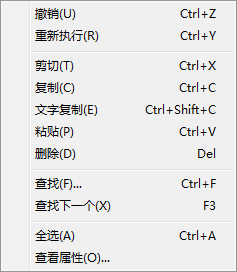
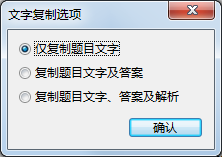
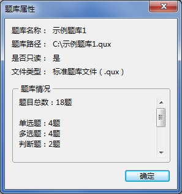
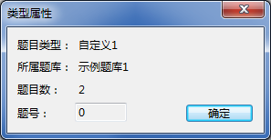
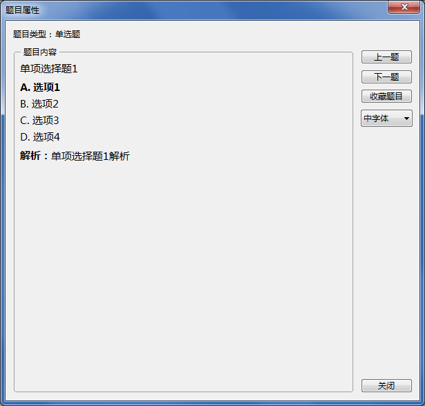

“编辑”菜单
“编辑”菜单

“编辑”菜单的相关说明如下：
撤销最后一步操作。QuickQuiz可保存最近10步编辑操作，可多次撤销。
重新执行先前被撤销的操作。支持撤销和重新执行的操作如下：
- 新建题目（组）
- 修改题目（组）（包括对题目类型和内容的修改）
- 删除题目（组）
- 重命名题库
- 修改题库封面
- 添加自定义类型
- 重命名自定义类型
- 删除自定义类型（同时删除类型下全部题目）
剪切选中的题目并将其置于剪贴板上，剪切的内容可粘贴至其他题库中。
复制选中的题目并将其置于剪贴板上，复制的内容可粘贴至其他题库中。
复制选中题目的文字。执行后，将弹出如下对话框，您可以选择要复制的内容：

复制的文字可用于文字编辑，但无法直接粘贴入题库中。
将剪贴板中的题目粘贴入被选中的题库，题目粘贴的规则详见
粘贴规则。
| 多字节版程序与宽字节版程序的剪贴板内容不可互相粘贴。 |
|---|
删除在主界面右侧窗格内选中的题目（组）。
| 删除功能仅用于删除题目，删除自定义类型列表请使用“删除自定义类型”。 |
|---|
查找题库中包含某些关键字的题目。
| 目前暂不支持通配符查找和正则表达式查找，不支持模糊查找，所查关键字必须为题目内包含的文字，例如判断题的答案“正确”或“错误”不可被查找。 |
|---|
查找题库中下一个包含某些关键字的题目。
将主界面右侧窗口中的全部题目选中。
根据主界面中选中的内容显示其属性。
-
当在主界面左侧窗格中选中题库时，可查看题库的名称、存储路径、是否只读、文件类型、题目数量等信息。

-
当在主界面左侧窗格中选中题库下的类型列表时，可查看选中类型的名称、所属题库、题目数等信息。

您可以为
自定义类型题目或
题目组设置
题号，在
开始考试或
生成试卷时，可选择按题号对题目（组）进行排序，题号可设为从1至32的任意数字，设为0时视为无题号。
默认类型题目不可设置题号。
自定义类型题目的题号设置在“类型属性”对话框中完成；题目组的题号设置在
题目组编辑界面中完成。
-
当在主界面右侧窗格中选中题目时，可查看被选中的题目信息。

| 当选中一个题目时，可通过“上一题”或“下一题”对整个列表的题目进行滚动查看；
当选中多个题目时，可通过“上一题”或“下一题”对选中的题目进行滚动查看。 |
|---|
GX Software 2020-2021
V2.0